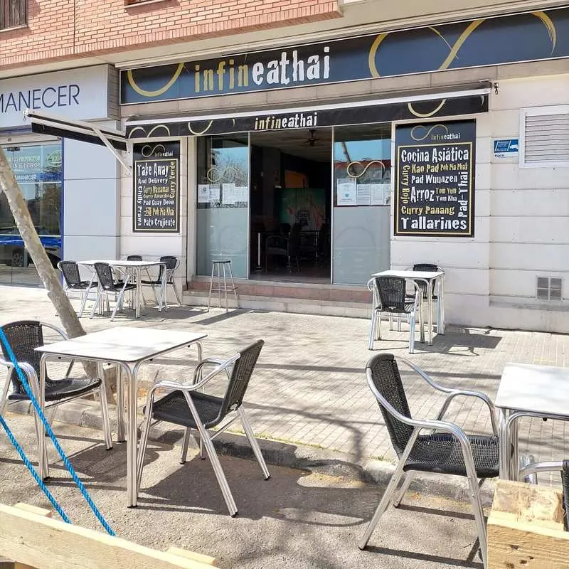
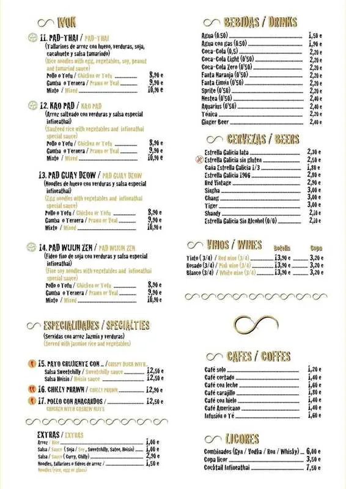
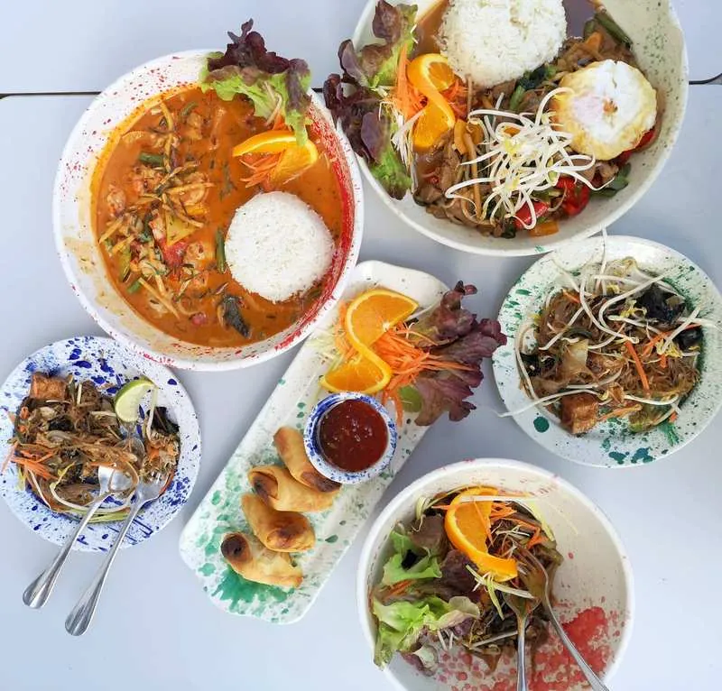
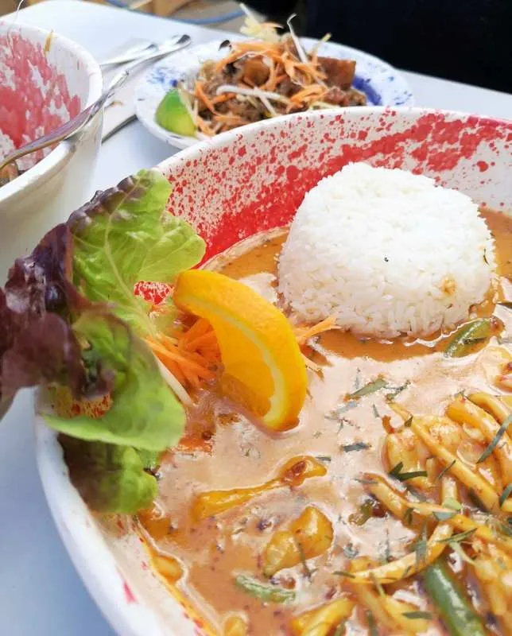
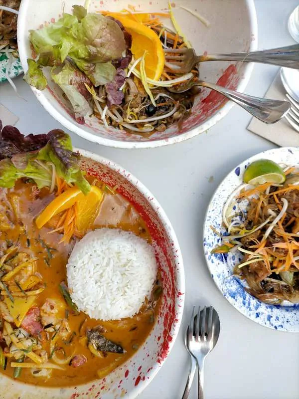
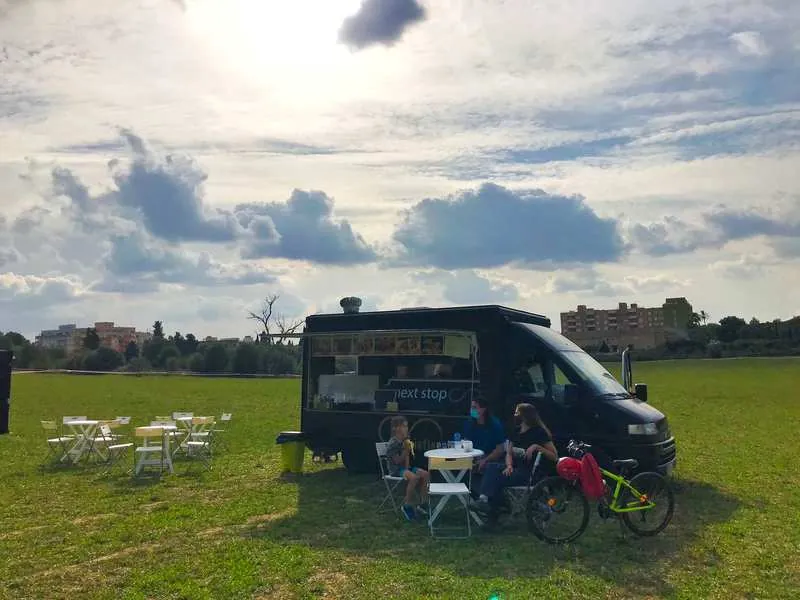
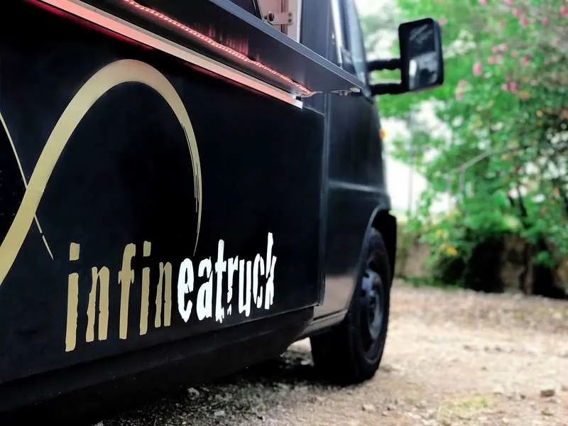
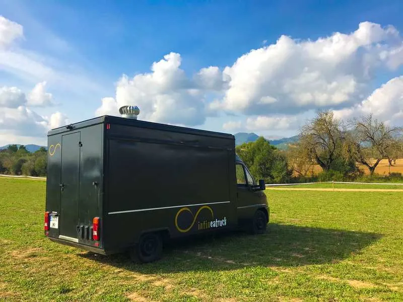
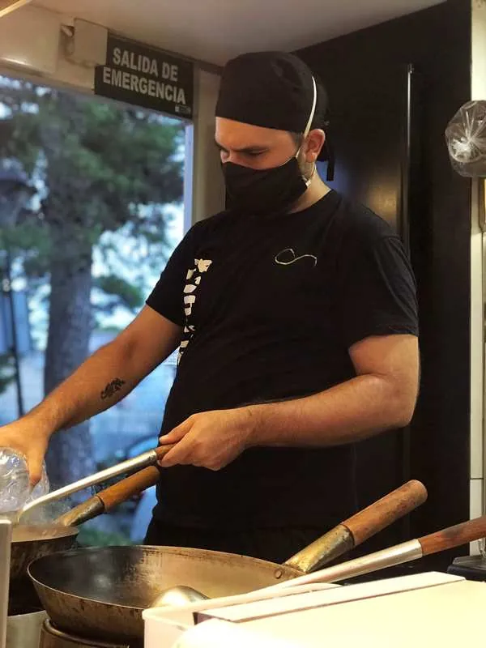
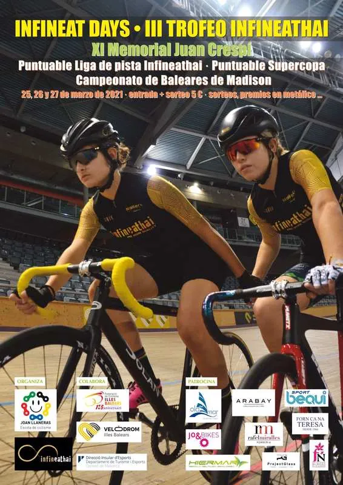

INFINEATHAI - Auténtica cocina tailandesa en Palma
📅 2021-03-21📁 Mallorca, Restaurantes - Palma
Hoy os quiero hablar de Infineathai, un restaurante de cocina tailandesa en la zona del conservatorio que conocí hace unos años y que se ha convertido en uno de mis restaurantes favoritos.

Es un restaurante pequeñito y con terraza, y ofrece repartos a domicilio y take away. En su carta podréis encontrar una gran variedad de platos tailandeses muy auténticos, así como algunas bebidas asiáticas (cervezas y ginger beer entre otras) y cocktails. Además tienen algunas especialidades fuera de carta y varios postres típicos tailandeses.
En condiciones normales abren de martes a domingo tanto para comidas como para cenas, y aunque actualmente no pueden servir cenas en el local por las restricciones continúan haciendo reparto por la noche.

Además de estar buenísimo y de tener un precio muy razonable, sobre todo considerando la calidad del producto, me encanta el hecho de que prácticamente todo lo que sirven sea de elaboración propia; destacan principalmente sus salsas y curris, así como el relleno de sus rollitos. También utilizan ingredientes frescos y todas las verduras y carnes (o gambas) para sus curris y sopas se cocinan al momento.
En cuanto al servicio, es un 10 enorme. Actualmente, debido a las restricciones, su restaurante de Santa Catalina está cerrado y parte de su personal está trabajando aquí, por lo que el equipo lo forman los cuatro socios: Joan, Toni, Neus y Dani. En condiciones normales también trabaja Prani, su cocinera tailandesa.
Todos ellos forman un gran equipo y muestran una gran pasión por lo que hacen, y eso se nota de lejos, tanto en el trato como en el producto que ofrecen.
LOS PLATOS
Tengo que reconocer que lo primero que me llamó la atención de los platos la primera vez que fui fue la vajilla en la que los sirven, una vajilla a medida hecha a mano por una marca de cerámicas local. Es preciosa y le da un toque muy personal y original a los platos, bajo mi punto de vista todo un acierto.
También llaman la atención, por un lado, la presentación super cuidada y, por otro, el tamaño de las raciones, ya que son bastante abundantes (sin llegar a ser excesivas). Sus platos nos transportan directamente a Tailandia solo con probarlos; están hechos con mucho mimo y con recetas de la cocina Thai tradicional.
En otras ocasiones había probado su curry amarillo con pato crujiente (el pato es absolutamente espectacular), los Poh Pia Gai (rollitos de pollo) y el Gai Satee (brochetas de pollo con salsa de cacahuete), así como algunos postres como el Sticky Rice (una especie de arroz con leche) con mango y las castañas de agua. Sobra decir que todos y cada uno de ellos estaban deliciosos.
En esta ocasión los platos que comí, y que aparecen en las fotos, son los siguientes:
Poh Pia Phak: rollitos de verdura con salsa sweet chili.
Pad Wuun Zen de tofu: vermicelli de soja con verduras y salsa especial.
Curry Panang de gambas: curry de cacahuete con un toque picante.
Krao Prao de pato: pato en salsa con verduras y un huevo frito. Este plato no aparece en el menú, pero es una de sus especialidades fuera de carta habituales.



Eso sí, mi gran favorito, como buena adicta al cacahuete: el curry Panang. Tremendo, incluso teniendo ese toque picante del que como norma general no soy excesivamente fan. La combinación de sabores es brutal, y solo os diré que acabé comiéndome la salsa a cucharadas...
En cuanto a los postres, aunque aun no he podido probarlos todos, me parecen super originales, ya que tienen opciones como plátano frito cubierto en masa filo o helados con sabores tan top como chocolate con chili (este lo tengo pendiente sí o sí porque me despierta muchísima curiosidad).
Y para acompañar, una ginger beer, un must para los amantes del jengibre.
INFINEATHAI... Y MÁS
Además de Infineathai también tienen otro restaurante de cocina fusión de autor en Santa Catalina, el Infineat, y un food truck, el Infineatruck, con el que acuden a eventos, tanto privados como ferias o concentraciones, llevando sus maravillosos platos allá donde van.
También organizan una carrera ciclista cada año y están muy comprometidos con el mundo del deporte.



Si os gusta la comida tailandesa Infineathai es sin duda de visita obligada en Palma. ¡Probadlo y me contáis!
พบกันเร็ว ๆ นี้ (¡hasta pronto!)
https://www.youtube.com/watch?v=ndT54xot43A&t=4s
DATOS DE CONTACTO
Teléfono: 871 700 124
Dirección: Carrer d'Alfons el Magnànim, 65 - Palma (Mallorca)